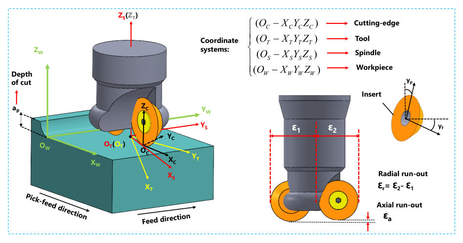

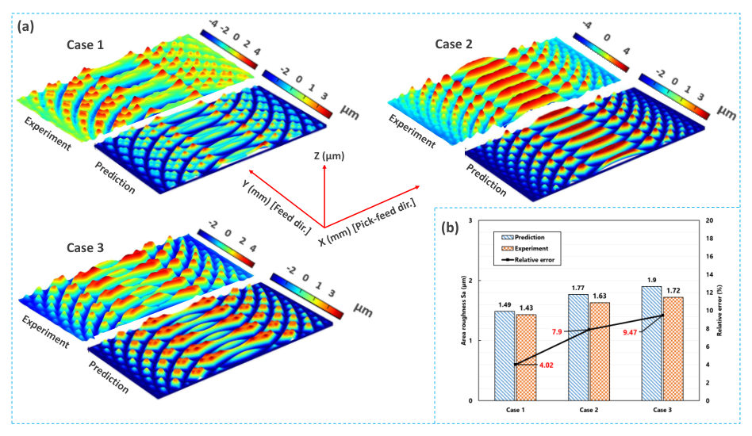
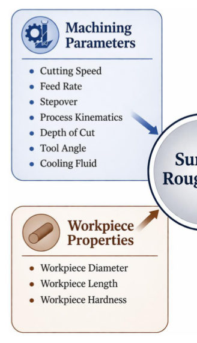
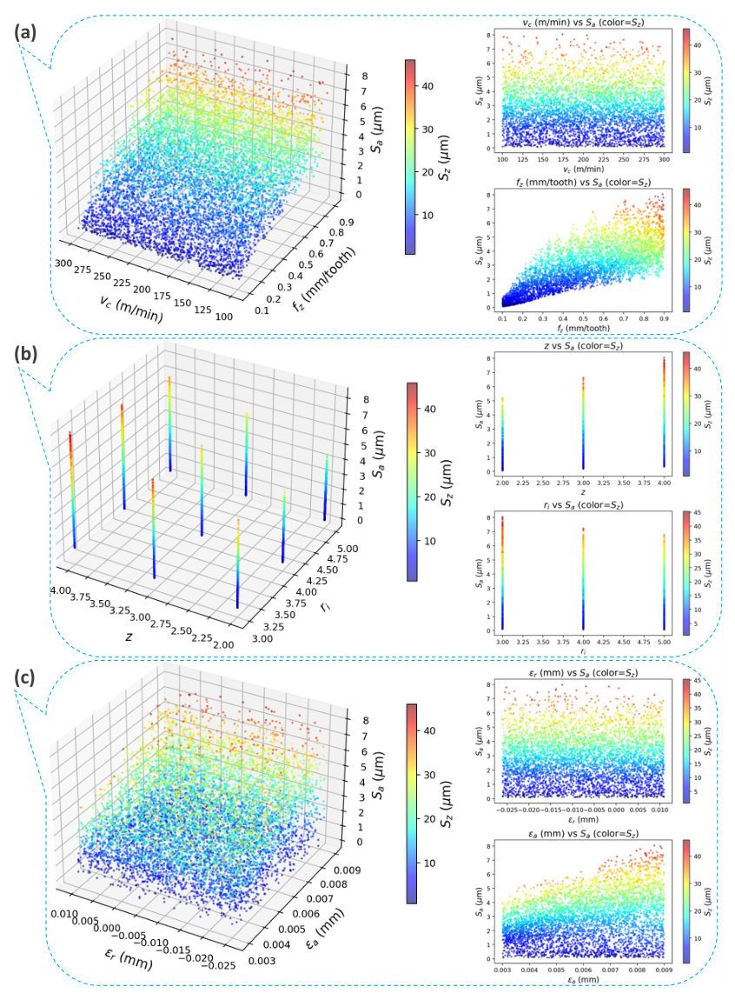
Authors: Hadi Bakhshan, Sima Farshbaf, Fernando Rastellini, Josep Maria Carbonell
Type: both · Category: disordered systems and neural networks · PDF: https://arxiv.org/pdf/2606.16032v1
Analysis basis: full PDF text, analyzed in chunks
Topic relevance: methods for driven-dissipative 1/5 · non-equilibrium dynamics 1/5




Summary. This paper develops a robust machine learning framework to solve the inverse design problem in milling, aiming to find process parameters that yield specific target surface roughness. It trains Deep Neural Networks and Random Forests on simulated data and uses Bayesian Optimization to navigate the complex parameter space. The methodology demonstrates high accuracy by successfully identifying multiple feasible solutions for desired surface quality.
Why it may be interesting. While applied to mechanical engineering, the methodology—using complex physical simulations to generate training data for deep learning surrogate models, followed by optimization in an ill-posed inverse problem—is highly relevant to developing physics-informed machine learning tools for quantum systems.
Main problem. The core problem is performing inverse design for surface milling processes: determining optimal machining and tool parameters required to achieve a target surface roughness.
Main result. A machine learning framework combining DNNs/RFs with Bayesian Optimization successfully identifies multiple feasible process configurations, achieving low average relative errors (below 5%) compared to reference simulations.
Method. The authors train ML models on high-fidelity synthetic datasets generated from computational fluid dynamics simulations and then use these trained models within a Bayesian Optimization loop to solve the ill-posed inverse problem.
Model / system. The physical system is a face milling process involving an indexable cutter. The model relies on generating synthetic data by simulating cutting-edge motion over time/space using complex coordinate transformations, treating components as rigid bodies.
Key observables. Average surface roughness (Sa) and maximum surface height (Sz).
Important parameters / regimes. Cutting speed ($v_c$), feed rate ($f_z$), number of inserts ($z$), insert radius ($r_i$), radial run-out ($\epsilon_r$), and axial run-out ($\epsilon_a$).
Assumptions / limitations. The ML performance is highly dependent on the quality of the synthetic training dataset, and the computational model disregards material properties.
Figures summary. Figures illustrate 3D surface topographies, convergence plots for optimization (DNN/RF), parity plots comparing predicted vs. actual roughness values, and visualizations of the solution space across different target regimes.
Paper structure. The paper first establishes the need for inverse design in manufacturing. It details generating synthetic data via simulation, trains DNN and RF models on this data, analyzes the inherent many-to-one mapping challenge, and finally integrates these ML surrogates into a Bayesian Optimization framework to propose optimal parameter sets.
Interest in applying data-driven approaches in manufacturing has grown significantly, particularly for mapping complex, high-dimensional relationships. The milling process is one area where predictive models can link influential parameters to surface roughness metrics prior to in situ operations. While this approach offers clear advantages, it faces challenges due to limited datasets and robustness issues in inverse design paradigms. To address these challenges, this paper proposes a machine learning (ML)-based framework for the inverse design of the surface milling process, with a focus on surface roughness as the design objective. The framework employs forward training of two ML models, a deep neural network (DNN) and a random forest (RF) ensemble, both developed using a high-fidelity synthetic dataset generated from a computational simulation framework. These trained models are integrated into a Bayesian optimization (BO) procedure to overcome the multiplicity problem arising from the many-to-one mapping inherent in the dataset. The approach identifies top-performing milling process configurations, considering both process and tool parameters, and presents them from the full solution space. The models achieve average relative errors below 5% when compared to reference results, thereby demonstrating the robustness and reliability of the proposed methodology.
Authors: Taiyang Zhang, Lujun Zhu, Qianbiao Liu, Lijun Zhu
Type: both · Category: other · PDF: https://arxiv.org/pdf/2606.14872v1
Analysis basis: full PDF text, analyzed in chunks
Topic relevance: spintronics-quantum-optics interface 1/5
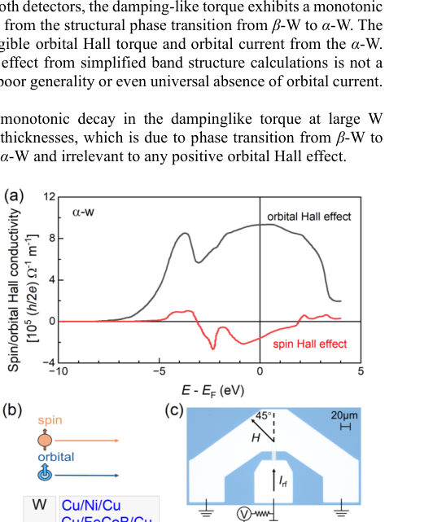
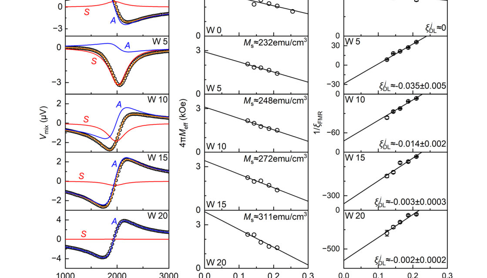
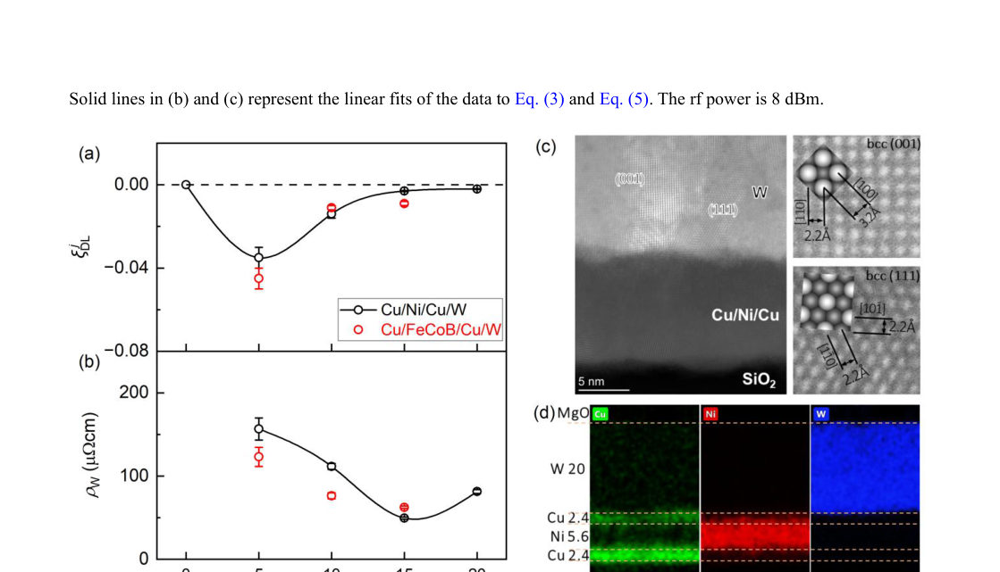
Summary. This work investigates the source of current-induced torques in alpha-W/ferromagnet interfaces using advanced, artifact-free experimental setups. By analyzing ST-FMR data across varying W thicknesses, the authors conclude that the torque is overwhelmingly dominated by the Spin Hall Effect and that orbital contributions are negligible. This challenges existing theoretical models regarding universal orbital currents in such systems.
Why it may be interesting. While primarily condensed matter physics, understanding spin-orbit torque mechanisms is crucial for spintronics devices which can interface with quantum computing components or novel memory elements. The rigorous elimination of artifacts provides a cleaner benchmark for fundamental material properties.
Main problem. The study aims to clarify the physical origin of current-induced torque (Spin-Orbit Torque, SOT) in alpha-W/ferromagnet heterostructures by determining whether it is dominated by the Spin Hall Effect (SHE) or the Orbital Hall Effect.
Main result. The spin-orbit torque from W remains negative and is predominantly due to the SHE across all measured thicknesses, suggesting that the orbital Hall torque contribution from alpha-W is negligible.
Method. The authors used fabricated, artifact-free angular momentum detectors (Cu/Ni/Cu and Cu/FeCoB/Cu) combined with Spin-Torque Ferromagnetic Resonance (ST-FMR) measurements to quantify torque efficiencies.
Model / system. The research focuses on $\alpha$-W/ferromagnet heterostructures, specifically using multilayers like Cu/Ni/Cu/W and Cu/FeCoB/Cu/W. The system involves analyzing the structural phase transition of W from beta-W to alpha-W.
Key observables. Damping-like torque efficiency ($\xi_{DL}^j$), field-like torque efficiency ($\xi_{FL}^j$), Spin Hall Conductivity ($\sigma_{SH}$), and Orbital Hall Conductivity ($\sigma_{OH}$).
Important parameters / regimes. W thickness ($t_W$), particularly the transition regime around 5 nm, and the magnetic properties of the ferromagnet layers.
Assumptions / limitations. The primary assumption is that using specific detector geometries (Cu/Ni/Cu etc.) successfully eliminates artifact torques such as self-induced torque and spin-vorticity torque.
Figures summary. Figures show theoretical calculations of Hall conductivities, ST-FMR spectra vs. field for varying W thickness, and plots detailing the monotonic decay of damping-like torque efficiency correlated with structural phase transitions.
Paper structure. The paper first establishes the problem regarding SOT origins in $\alpha$-W/ferromagnet systems. It then presents experimental measurements using specialized detectors to quantify torques as a function of W thickness, leading to the conclusion that SHE dominates and orbital contributions are negligible.
α-phased W was theoretically predicted to have a negative spin Hall conductivity and a positive orbital Hall conductivity at the same time, leaving the physical origin of the current-induced torque a critical open question. Here, we develop two angular momentum detectors of Cu/Ni/Cu and Cu/FeCoB/Cu that are free of artifacts torques (e.g., self-induced torque and spin-vorticity torque) and clarify that the spin-orbit torque contributed by W remains negative and predominantly from the spin Hall effect in the entire thickness regime. With both detectors, the damping-like torque exhibits a monotonic decay as the W thickness increases above 5 nm, which results from the structural phase transition from \b{eta}-W to α-W. The negative torque in the entire thickness regime suggests negligible orbital Hall torque and orbital current from the α-W. This result is consistent with the theory that the orbital Hall effect from simplified band structure calculations is not a non-local angular momentum source. These findings suggest poor generality or even universal absence of orbital current.
Authors: Yi-Feng Zhao, Antia S. Botana
Type: theory · Category: strongly correlated electrons · PDF: https://arxiv.org/pdf/2606.16195v1
Analysis basis: full PDF text, analyzed in chunks
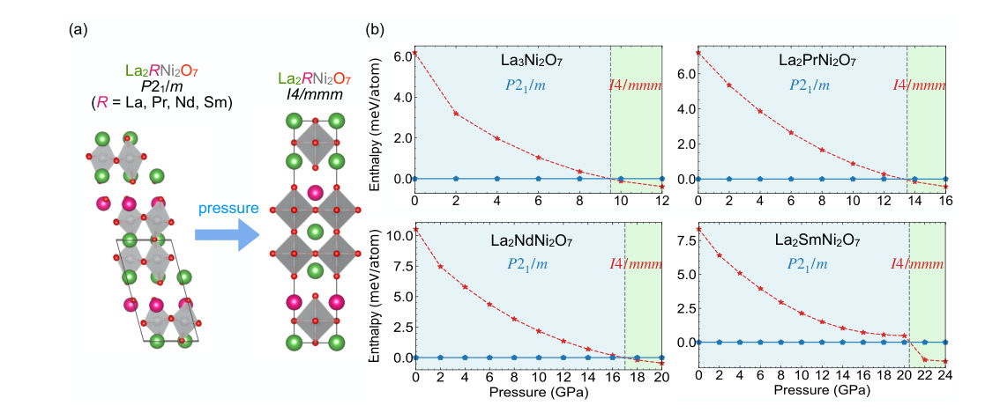
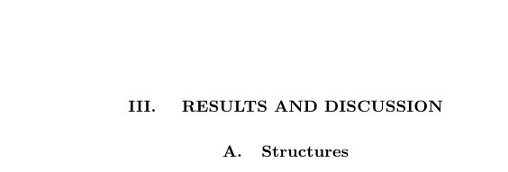
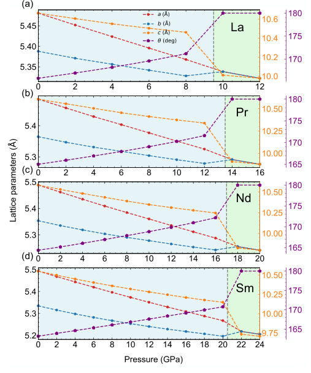
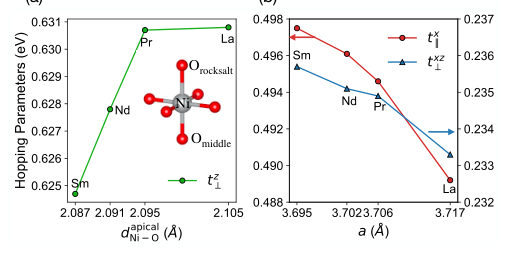
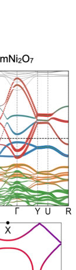
Summary. The study uses first-principles calculations to investigate rare-earth doped nickelates ($ ext{La}_2 ext{R} ext{Ni}_2 ext{O}_7$) as model superconductors. It demonstrates that doping and pressure induce structural transitions accompanied by key electronic changes, such as the formation of flat $d_{z^2}$ bands at the Fermi level. These findings provide a microscopic understanding of how chemical tuning affects superconductivity in these correlated materials.
Why it may be interesting. This work provides detailed first-principles insights into how subtle chemical substitutions (R-doping) can tune electronic correlations and structural instabilities, which is a key area of research relevant to understanding unconventional superconductivity mechanisms.
Main problem. To systematically explore how rare-earth (R) doping affects the crystal structure and electronic properties of Ruddlesden-Popper (RP) nickelates, specifically $ ext{La}_2 ext{R} ext{Ni}_2 ext{O}_7$, in relation to superconductivity.
Main result. The study finds that R-doping causes a progressive decrease in volume and an increase in planar hopping while decreasing out-of-plane hopping, and a pressure-induced structural transition to tetragonal symmetry coincides with the emergence of superconducting electronic features (flat $d_{z^2}$ bands).
Method. First-principles calculations using PBE GGA+U functional were employed to optimize structures and analyze electronic band structures and hopping parameters.
Model / system. The physical system is the bilayer RP nickelate superconductor $ ext{La}_2 ext{R} ext{Ni}_2 ext{O}_7$ ($ ext{R} = ext{Pr}, ext{Nd}, ext{Sm}$), studied under varying chemical doping and hydrostatic pressure.
Key observables. Crystal structure symmetry ($P2_1/m$ vs $I4/mmm$), lattice parameters, planar/out-of-plane hopping integrals, and the emergence of flat $d_{z^2}$ bands at the Fermi level.
Important parameters / regimes. Rare-earth element identity (R), doping concentration, and applied pressure (e.g., 9.5 GPa to 20.5 GPa).
Assumptions / limitations. The calculations use GGA+U approximation for Ni-$3d$ states; the connection between structural/electronic changes and $T_c$ is inferred from theoretical trends.
Figures summary. Figures illustrate crystal structures, lattice parameter changes with pressure/doping, and electronic band structures showing the emergence of hole-like $ ext{d}_{z^2}$ pockets at high pressure.
Paper structure. The paper systematically compares the structural and electronic properties across different R dopants ($ ext{Pr}, ext{Nd}, ext{Sm}$) under ambient and high pressures, linking observed changes in hopping parameters and band structure to the superconducting phase transition.
The discovery of superconductivity in bilayer La$_3$Ni$_2$O$_7$ under pressure has sparked tremendous attention on Ruddlesden-Popper (RP) nickelates. Recently, a higher superconducting transition temperature of 96 K was reported in Sm-doped La$_3$Ni$_2$O$_7$ single crystals at $\sim$ 22 GPa. Motivated by this experimental observation, we systematically explore the crystal structure and electronic properties of La$_3$Ni$_2$O$_7$ doped with different rare-earth elements in comparison to the undoped counterpart. As expected due to the effect of chemical pressure, we find that the volume of La$_{2}$$R$Ni$_2$O$_7$ ($R=$ Pr, Nd, Sm) progressively decreases with doping from Pr to Sm. We further find a pressure-induced structural transition to tetragonal symmetry that approximately coincides with the emergence of superconductivity in all cases. This transition is characterized by the emergence of flat $d_{z^2}$ bands at the Fermi level in the electronic structure. Despite subtle distinctions in the electronic structure between undoped and $R$-doped La$_3$Ni$_2$O$_7$, an increase in the dominant planar hopping is obtained as the $R$ size decreases. In contrast, the out-of-plane hopping decreases (in spite of the $c$ lattice constant compression), due to the decrease in the apical Ni-O$_{\rm rocksalt}$ bond length. Our findings provide further microscopic insights into the effects of $R$-doping in the electronic structure of RP nickelate superconductors in connection to $T_c$.
Authors: Michael Parzer, Geoffrey Roy, Fabian Garmroudi, Pawel Ziolkowski, Thomas Konegger, Ernst Bauer, Pascal J. Jacques
Type: experiment · Category: other · PDF: https://arxiv.org/pdf/2606.16851v1
Analysis basis: full PDF text, analyzed in chunks
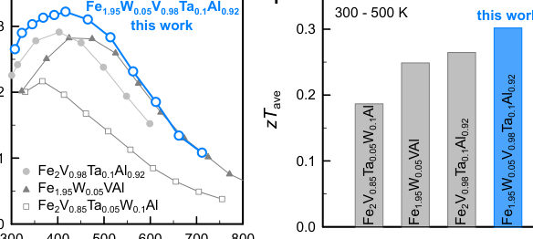
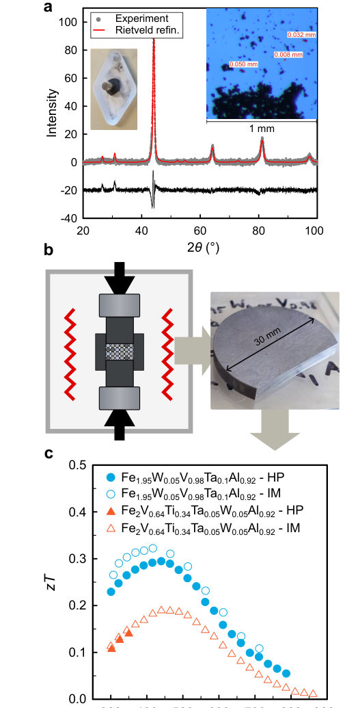
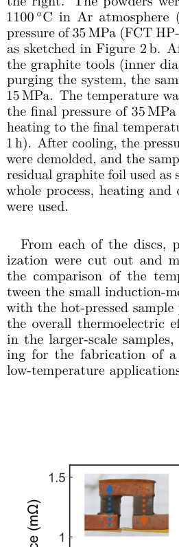
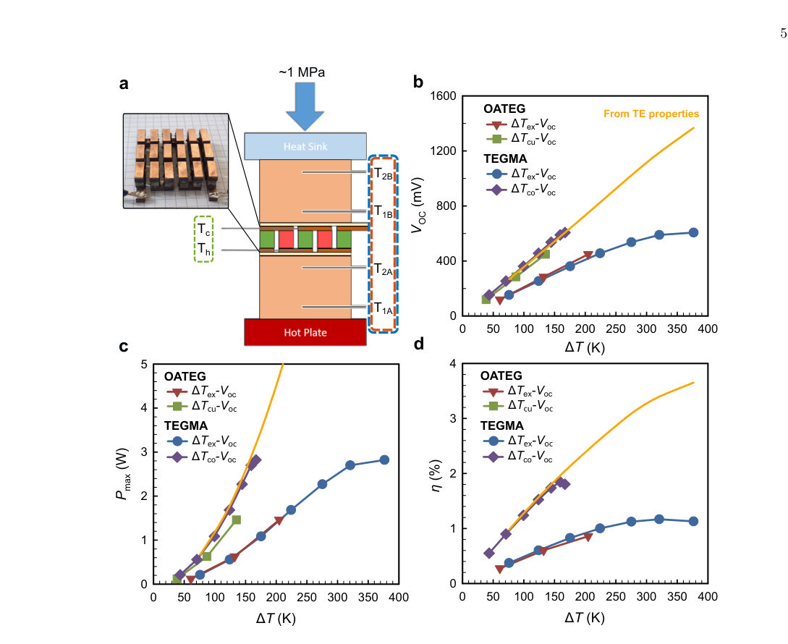
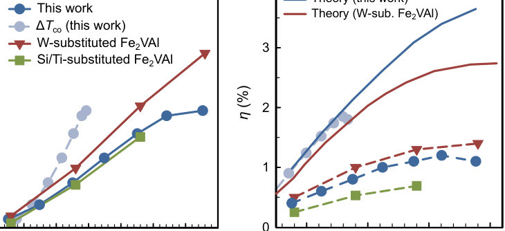
Summary. This research successfully optimized Fe2VAl-based thermoelectric materials using high-entropy engineering to achieve extremely low thermal conductivity. By fabricating and testing a large, multi-leg module, the authors demonstrated record conversion efficiencies for this material class, proving its potential for scalable energy harvesting applications.
Why it may be interesting. While not directly related to quantum phenomena, the focus on disorder engineering to suppress lattice vibrations ($\kappa_L$) is conceptually related to minimizing energy dissipation mechanisms studied in condensed matter theory.
Main problem. Developing thermoelectric (TE) materials that combine high efficiency with favorable secondary properties like low cost, non-toxicity, and scalability for practical energy harvesting.
Main result. A fabricated 36-leg TE module based on Fe2VAl-based full-Heusler compounds achieved a record-high conversion efficiency of 1.2% at a temperature difference of 375 K without requiring nanostructuring.
Method. The study utilized high-entropy engineering via heavy-element doping and controlled off-stoichiometry, followed by hot pressing for large-scale synthesis and direct brazing into functional TE modules.
Model / system. The physical system is the Fe2VAl-based full-Heusler compound. Performance optimization relies on inducing substitutional disorder through high-entropy alloying to achieve an ultra-low lattice thermal conductivity (kappa_L ~ 2.3 W m^-1 K^-1).
Key observables. Figure of Merit (zT), average zT (~0.3 from 300-500 K), output power, and conversion efficiency.
Important parameters / regimes. Temperature range (300–673 K), lattice thermal conductivity (kappa_L), and the degree of substitutional disorder achieved via doping/off-stoichiometry.
Assumptions / limitations. The study assumes that high entropy engineering can simultaneously optimize electronic transport (high PF) and minimize thermal transport ($\kappa_L$) in a mechanically robust manner, avoiding complex nanostructuring techniques.
Figures summary. Figures summarize the optimization of TE properties using heavy-element co-substitution across different material compositions and show comparative performance data for fabricated modules over temperature ranges.
Paper structure. The paper progresses from establishing the need for practical TE materials to detailing the high-entropy engineering approach, presenting synthesis methods (hot pressing), characterizing electrical/thermal properties, and culminating in the fabrication and testing of a large-scale module.
Thermoelectric (TE) materials enable the direct conversion of heat into electricity and are attractive for sustainable energy applications. For practical deployment, TE materials must combine high efficiency with low cost, non-toxicity, and scalability. In this work, we optimize the TE performance of low-cost and robust Fe$_2$VAl-based full-Heusler compounds through high-entropy engineering: a synergistic combination of heavy-element doping and controlled off-stoichiometry results in substitutional disorder on all lattice sites, triggering one of the lowest lattice thermal conductivities, $κ_\text{L}\sim2.3$ W m$^{-1}$ K$^{-1}$, reported so far for full-Heusler systems. The resulting materials exhibit improved values of the average figure of merit $zT_\text{ave}\approx 0.3$ from $300-500$ K. To demonstrate reproducibility and technological relevance, a full TE module (TEM) based on the optimized alloys was fabricated and characterized. Scaled-up material batches were synthesized by hot pressing, exhibiting TE properties in excellent agreement with laboratory-scale samples, with only slightly increased resistivities in absence of post-annealing treatments. Owing to the excellent mechanical workability of Fe$_2$VAl-based materials, the TEM legs were directly brazed onto copper electrodes, enabling robust module fabrication. A ($6\times 6$)-leg TEM was assembled and systematically characterized. The device exhibits the highest output power and one of the highest conversion efficiencies reported to date for Fe$_2$VAl-based generators over the broad temperature range of $300-673$ K, underscoring the potential of this material system for scalable TE energy harvesting.